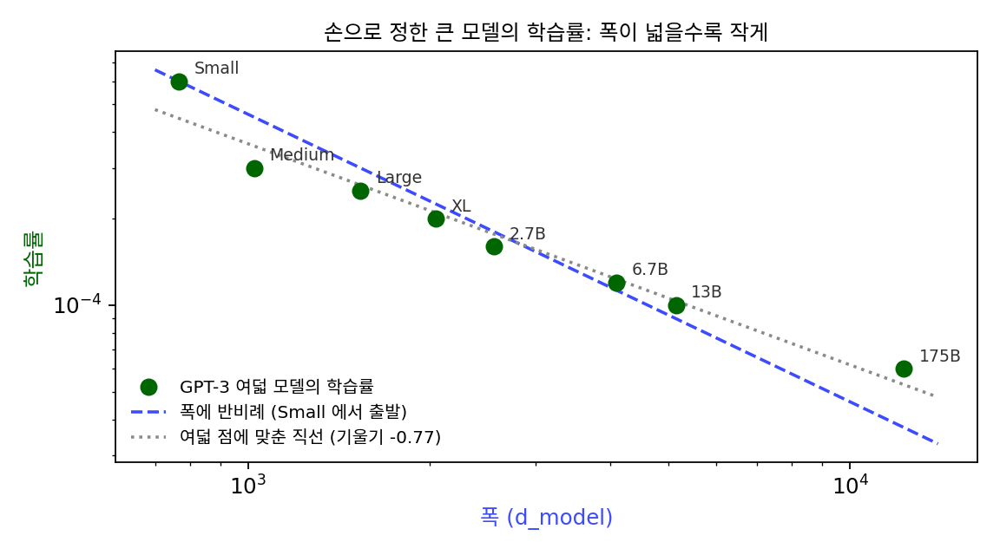
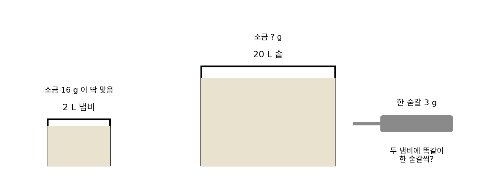
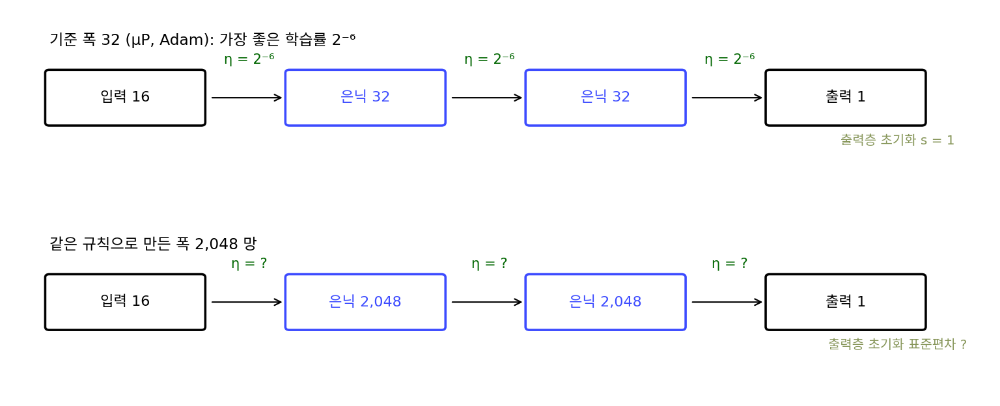
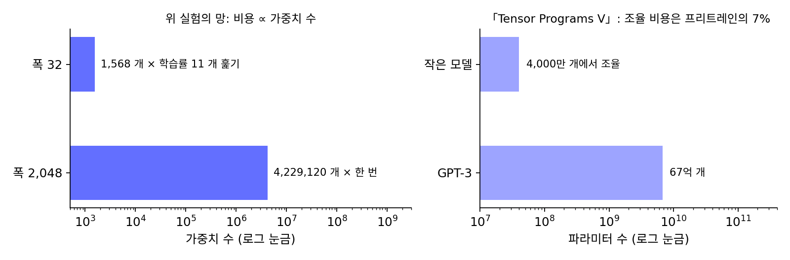

μTransfer: 좁은 망에서 고른 학습률을 넓은 망에 옮기기
μP 에서는 은닉 특징이 폭과 상관없이 같은 크기로 움직였다. 한 스텝이 망 안쪽을 흔드는 정도가 폭과 상관없다면, 가장 좋은 학습률도 폭과 상관없이 한자리에 있어야 하지 않을까? 그렇다면 큰 모델의 학습률을 작은 모델에서 미리 찾아 그대로 옮겨 쓸 수 있을 텐데, 정말 그럴까?
역사: 4,000만 개로 67억 개를 조율하다
μP 가 나오기 전 큰 모델의 학습률은 사람이 정했다. GPT-3 표의 여덟 학습률을 폭에 대해 그려 보면 폭이 넓을수록 작게 잡았다는 것은 보이지만, 그 값들이 어떤 규칙을 따른 것인지는 논문에 적혀 있지 않다.

「Tensor Programs V」(양 외, 2022)는 μP 에서는 가장 좋은 학습률이 폭이 바뀌어도 거의 같다는 성질을 큰 모델에서 시험했다. 그들은 작은 모델에서 하이퍼파라미터를 고르고 큰 모델에는 손대지 않고 옮겨 쓰는 방법을 μTransfer 라 불렀다. 파라미터 4,000만 개짜리 모델에서 옮겨 온 설정으로 67억 개짜리 GPT-3 모델을 학습해 논문에 실린 같은 크기 GPT-3 의 성능을 넘었고, 그 조율에 든 계산은 프리트레인 전체의 7% 였다. 1,300만 개짜리 모델에서 옮긴 설정으로 3억 5,000만 개짜리 BERT-large 를 넘은 결과도 함께 실렸다. 저자들은 구현을 pip install mup 한 줄로 받을 수 있게 공개했다.

작은 모델에서 고른 값을 큰 모델에 그대로 쓰는 건 누구나 먼저 해 볼 만한 생각 같은데요.

해 볼 수는 있었죠. 그런데 표준 파라미터화에서는 그대로 옮긴 학습률이 넓은 망에서 맞지 않았고, 어느 숫자를 옮겨야 하는지 알려 주는 규칙이 없었어요. 맞는지 확인하려면 큰 모델을 학습해 봐야 했고요.

67억 개 모델이면 확인 한 번이 곧 프리트레인 한 번이네요. 틀리면 그만큼을 다시 써야 하고요.

그래서 μTransfer 의 결과에서 눈여겨볼 것은 성능만큼 계산이에요. 조율 전체에 프리트레인의 7% 를 썼어요.

큰 모델로 학습률 후보를 돌려 보는 일을 거의 안 했다는 거네요. 대신 작은 모델에서 고른 값이 큰 모델에서도 맞는다는 걸 믿어야 하고요.

그 믿음의 근거는 뭐예요? 폭을 바꿔 가며 학습률–손실 곡선을 그리면, μP 에서는 가장 좋은 학습률이 정말 폭과 상관없이 같은 값에 놓여요?
폭 32 에서 2,048 까지
표준 파라미터화의 학습률 훑기에 쓴 망(입력 16차원, 은닉층 둘, Adam 300스텝)을 그대로 두고 μP 로만 바꿨다. 출력층 초기화를 s = 32/n배로 작게, 은닉층과 출력층의 학습률을 η × s로 붙였는데, 표 3 의 Adam 칸을 폭 32 에 맞춘 꼴이라 폭 32 에서는 두 규칙이 똑같은 망이다. 기준 학습률 η를 2⁻¹⁴ 부터 2⁻⁴ 까지 두 배 간격으로 훑었다.
| 폭 n | 표준: 가장 좋은 log₂ η (그 손실) | μP: 가장 좋은 log₂ η (그 손실) | 폭 32 에서 고른 2⁻⁶ 을 그대로 쓸 때: 표준 / μP |
|---|---|---|---|
| 32 | −6 (0.0588) | −6 (0.0588) | 0.0588 / 0.0588 |
| 128 | −7 (0.00516) | −6 (0.00598) | 0.0184 / 0.00598 |
| 512 | −9 (0.00084) | −6 (0.00188) | 0.0362 / 0.00188 |
| 2,048 | −13 (0.00206) | −6 (0.00088) | 0.206 / 0.00088 |
표준 파라미터화에서는 가장 좋은 학습률이 2⁻⁶, 2⁻⁷, 2⁻⁹, 2⁻¹³ 으로 폭을 따라 밀려난다. 폭이 64배가 되는 동안 128분의 1로 줄었다. 게다가 폭 2,048 의 가장 낮은 손실 0.00206 은 폭 512 의 0.00084 보다 나쁘다. 「Tensor Programs V」가 적은 「넓은 망이 늘 낫지는 않다」가 이 작은 망에서도 나온 것이다. 폭 32 에서 고른 2⁻⁶ 을 그대로 옮기면 폭 2,048 의 손실은 0.206 으로, 폭 32 의 0.0588 보다 3.5배 나쁘다.
μP 에서는 네 폭 모두 가장 좋은 학습률이 2⁻⁶ 에 선다. 폭 32 에서 고른 값을 그대로 옮기면 그것이 곧 그 폭에서 가장 좋은 값이고, 손실은 0.0588, 0.00598, 0.00188, 0.00088 로 넓을수록 낮아진다. 폭마다 학습률을 따로 훑을 수 있다면 표준 파라미터화가 더 낮은 손실을 낼 때도 있다(폭 512 에서 0.00084 대 0.00188). μP 가 주는 것은 넓은 망에서 학습률을 훑지 않아도 된다는 것과, 넓힐수록 나아진다는 것을 믿을 수 있게 된다는 것이다.
이렇게 기준 폭에서 고른 학습률을 μP 의 규칙대로 넓은 망에 옮겨 쓰는 것을 μTransfer (좁은 망에서 고른 하이퍼파라미터를 μP 로 넓은 망에 옮겨 쓰기 / μ-transfer)라 한다. 옮겨 가는 것은 학습률 숫자 그대로가 아니라 「기준 폭에서의 학습률」이고, 층마다 실제로 쓰이는 값은 μP 가 폭에 맞춰 줄여 준다.
ML에서: μP 와 Muon 은 같은 물음의 두 답
Muon 은 은닉층 그래디언트 행렬을 특잇값 분해 UΣVᵀ 로 보고, 특잇값을 모두 1 로 바꾼 UVᵀ 를 스텝으로 쓰는 옵티마이저다. μP 와 Muon 은 하는 일이 달라 보인다. μP 는 폭에 따라 초기화와 학습률을 학습 전에 정해 두는 처방이고, 지키려는 것은 「특징이 폭과 상관없는 크기로 움직이게」다. Muon 은 스텝마다 그래디언트의 방향에 반응해 스텝의 스펙트럼 노름을 일정하게 맞춘다. 위 실험의 망에서 처음 자리의 은닉층 그래디언트를 UVᵀ 로 바꾸면 스펙트럼 노름은 폭 128, 512, 2,048 모두 1.000 이다. 정사각 은닉층의 스펙트럼 조건 ‖ΔW‖₂ = Θ(1) 을 Muon 은 스텝마다 맞춘다.
번스타인과 래커 뉴하우스(Laker Newhouse)는 2024년 「옛 옵티마이저, 새 노름(Old Optimizer, New Norm: An Anthology)」에서 지수 이동 평균을 끈 Adam, Shampoo 같은 옵티마이저가 저마다 어떤 노름 아래의 가장 가파른 내리막이라고 읽었다. Adam 은 좌표마다의 최댓값으로 재는 노름 아래의 가장 가파른 내리막(그래디언트의 부호)이고, Shampoo 는 스펙트럼 노름 아래의 가장 가파른 내리막이다. 같은 해 「딥러닝의 모듈 쌍대성(Modular Duality in Deep Learning)」에서는 층마다 그 층이 하는 일에 맞는 노름을 정해 그래디언트를 스텝으로 바꾸자고 했다. 선형층에 √(fan_out/fan_in) 배율을 넣은 스펙트럼 노름을 붙이면, 스텝은 UVᵀ 에 그 배율을 곱한 것이 되고, μP 의 스펙트럼 조건도 함께 나온다. 그들은 μP 와 Shampoo 를 이 한 가지 변환의 부분적 근사로 보아야 한다고 적었다.
그러니 μP 와 Muon 은 같은 물음에 대한 두 답이다. 파라미터 공간에서 공정한 한 스텝이란 무엇인가? 그 답은 스텝을 어떤 노름으로 재느냐를 먼저 정해야 나온다. 좌표의 칸 수로 재면 표준 파라미터화가 되고, 스펙트럼 노름으로 재면 μP 와 Muon 이 된다.
문제 9. 작은 냄비에서 간을 보고 큰 솥에
국을 2 L 냄비에 끓여 보니 소금 16 g 이 딱 맞았는데, 잔치를 위해 같은 국을 20 L 솥에 끓인다. (가) 소금을 그대로 16 g 넣으면 농도는 몇 %인가? 농도를 지키려면 몇 g 이 필요한가? (나) 「간이 모자라면 한 숟갈(3 g)씩 더 넣는다」는 규칙을 두 냄비에 똑같이 쓰면, 한 숟갈이 농도를 바꾸는 정도는 각각 얼마인가? (다) 작은 냄비에서 알아낸 것 가운데 큰 솥에 그대로 옮길 수 있는 것은 무엇인가?

김민준: (가) 2 L 에 16 g 이면 0.8% 예요. 20 L 에 16 g 이면 0.08% 라 싱겁고, 농도를 지키려면 160 g. (다)는 「소금 16 g」을 옮기면 안 되고 「0.8%」를 옮겨야겠네요. 그럼 숟갈 규칙도 똑같이 쓰면 되겠죠.한 숟갈이 농도를 얼마나 바꾸는지 두 냄비에서 계산해 볼까요?

2 L 에서는 3 g 이 0.15%p, 20 L 에서는 0.015%p 요. 큰 솥에서는 한 숟갈이 열 배나 약해요. 간을 맞추려면 숟가락을 솥 크기에 맞춰 키워야 하네요.
옮겨야 할 건 「0.8%」처럼 냄비 크기와 상관없는 양이고, 숟가락처럼 냄비 크기에 묶인 건 비율대로 고쳐야 해.
학습률은 그 둘 가운데 어느 쪽이었죠?

숟가락 쪽이요. 그대로 옮기면 안 되는 숫자였어요. μP 는 「기준 폭에서의 학습률」이라는 크기와 상관없는 양을 정해서, 층마다 숟가락을 폭에 맞춰 고쳐 주는 거네요.

조별 과제 분량을 「조원 네 명일 때 한 사람 분량」으로 정해 두면, 조원이 늘어도 기준은 그대로 두고 각자 분량만 비율로 줄이면 되네요. 「네 명일 때 한 사람 분량」이 기준 폭에서의 학습률이고요.
문제 10. 폭 32 에서 찾은 학습률을 폭 2,048 로
위 실험의 μP(Adam) 에서 기준 폭 32 의 가장 좋은 학습률은 2⁻⁶ 이었다. 같은 규칙으로 폭 2,048 모델을 만들 때 입력층·은닉층·출력층에 실제로 들어가는 학습률과 출력층 초기화의 표준편차는 각각 얼마인가? 입력 차원은 폭과 상관없이 16 이다.

김민준: 표 3 에서 Adam 의 은닉층 학습률은 1/fan_in 이니까 2⁻⁶ × 1/2,048 = 2⁻¹⁷ 이요. 출력층도 같고, 입력층은 fan_in 이 입력 차원 16 이라 폭과 상관없으니 2⁻⁶ 그대로고요.그 계산대로라면 폭 32 일 때 은닉층에 실제로 들어간 학습률은 얼마였죠?
2⁻⁶ × 1/32 이어야 하는데… 코드를 보면 은닉층 학습률이 η × s이고 s = 32/n이라서, 폭 32 에서는 s = 1 이고 은닉층에도 2⁻⁶ 이 그대로 들어갔네요. 표의 1/fan_in 은 폭에 따라 얼마나 줄이느냐는 비례만 말하고, 출발점은 기준 폭에서 찾은 값이었어요.
그럼 폭 2,048 은 s = 32/2,048 = 1/64 라서 은닉층과 출력층이 2⁻⁶/64 = 2⁻¹², 입력층은 2⁻⁶ 이요.
출력층 초기화도 같은 s를 써. 표준 파라미터화의 표준편차 1/√2,048 = 0.02210 에 1/64 을 곱해서 0.000345. 위젯 가로축의 학습률은 폭 32 에서 찾은 기준값 하나고, 층마다 실제 값은 μP 가 폭에 맞춰 줄여 주는 거네.

그래요. 그래서 μTransfer 로 옮기는 숫자를 「기준 폭에서의 학습률」이라고 불러요. 기준 폭을 바꾸면 같은 망에서도 옮기는 학습률 숫자가 달라지니, 숫자를 남과 주고받을 때는 기준 폭을 함께 적어야 해요.

비례식(학습률 ∝ 1/폭)만 있고 비례상수가 없으면 값을 못 정하잖아요. 기준 폭이 그 상수를 정하는 초깃값이고요.
문제 11. 학습률을 훑는 값
위 실험의 망은 가중치가 폭 32 에서 1,568 개, 폭 2,048 에서 4,229,120 개다. 한 스텝의 계산은 가중치 수에 비례하고 스텝 수는 같다고 하자. (가) 폭 32 에서 학습률 11 개를 훑는 비용은 폭 2,048 을 한 번 학습하는 비용의 몇 %인가? 폭 2,048 에서 직접 11 개를 훑으면? (나) 「Tensor Programs V」는 4,000만 개 모델에서 옮겨 67억 개 GPT-3 를 조율했고, 조율 비용이 프리트레인 전체의 7% 였다고 적었다. 같은 토큰 수로 학습한다면 4,000만 개 모델을 몇 번 학습한 분량인가? (다) 이 셈에서 빠진 것은 무엇인가?

김민준: (가)는 11 × 1,568 ÷ 4,229,120 = 0.41% 요. 직접 훑으면 1,100% 니까 2,697배 차이예요. (나)는 4,000만 ÷ 67억 = 0.60% 니까 7% 면 12번쯤 돌린 거네요. 생각보다 많이 안 돌렸어요.12번이면 학습률 하나만 훑은 걸까요?
논문 제목이 「하이퍼파라미터 옮기기」였으니까 학습률 말고도 초기화 크기 같은 것도 같이 골랐겠죠. 그리고 작은 모델도 토큰을 큰 모델만큼 다 쓰지는 않았을 수도 있고요. 제가 계산한 「12번」은 같은 토큰 수라고 놓은 셈이라 실제 횟수는 아니에요.
(다)는 옮긴 학습률이 정말 넓은 망에서도 가장 좋은지 확인하는 비용이야. 그건 μP 가 맞다는 믿음에 기대는 거고. 위 실험처럼 폭 몇 개에서 곡선이 한 세로줄에 서는지 먼저 확인해 두는 게 그 믿음의 근거가 되겠네.
시험 범위 전체를 매번 다 푸는 대신 요약 노트로 연습하고 실전에 가는 거네요. 요약 노트가 작은 기준 망이고, 시험이 큰 망이에요. 요약 노트가 시험과 같은 구조라는 걸 한 번은 확인해 둬야 하고요.